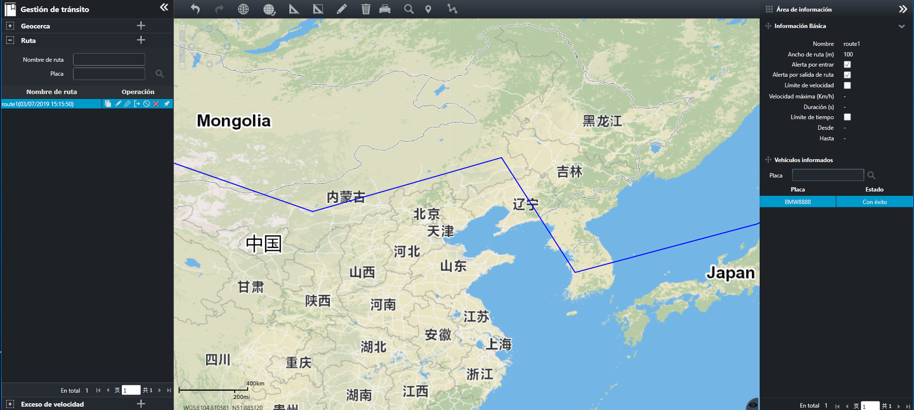

Configure ruta de conducción y aplica al vehículo, entonces la velocidad de conducción y la ruta de acceso del vehículo estarán
limitados por la ruta de conducción.Si el vehículo viola la ruta de conducción configurada, la información de alarma correspondiente
se informará a la plataforma de seguridad.
Haga clic en en la barra del menú de navegación a la izquierda para entrar a la página
“Ruta”, como se muestra en la siguiente figura.

Fig 62 Ruta de conducción